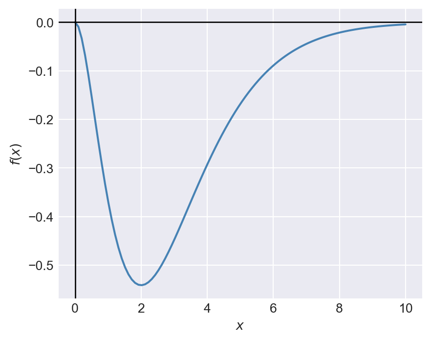
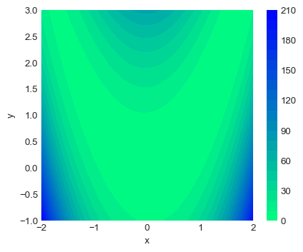
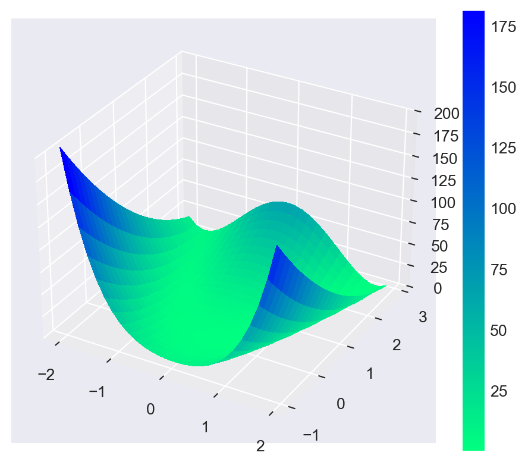
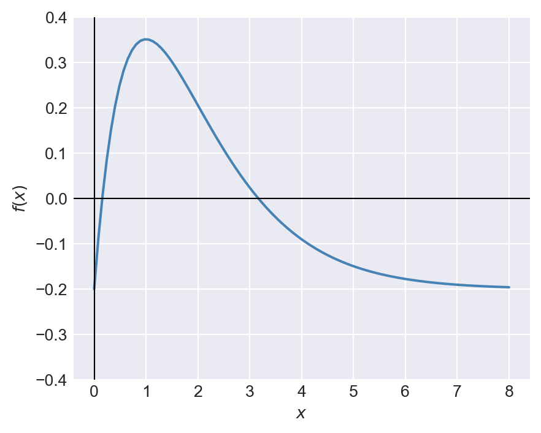
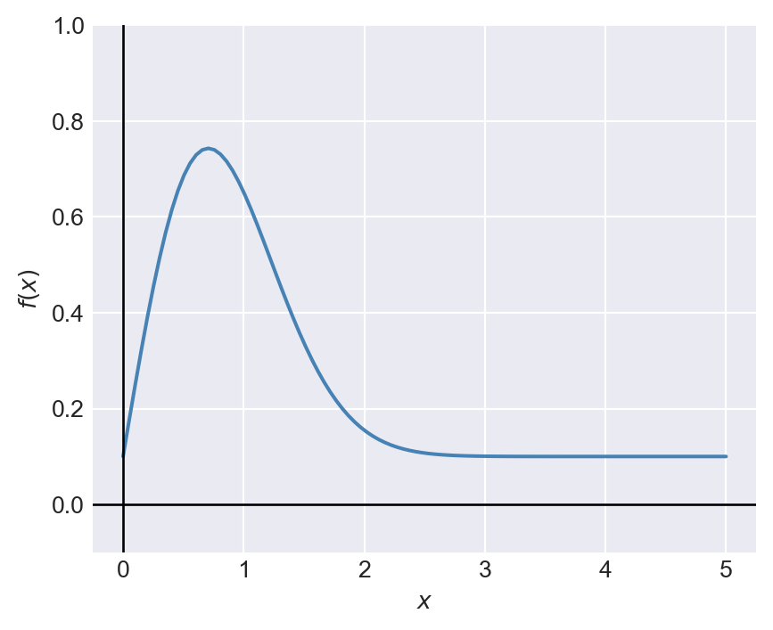
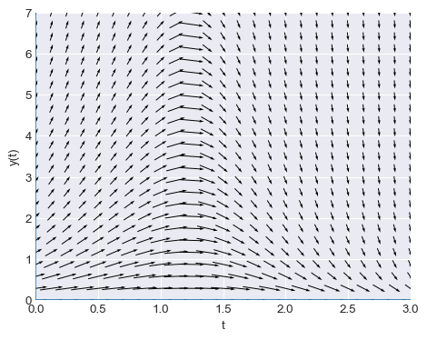
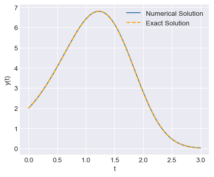
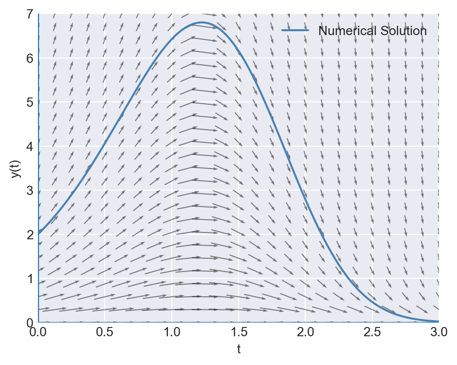
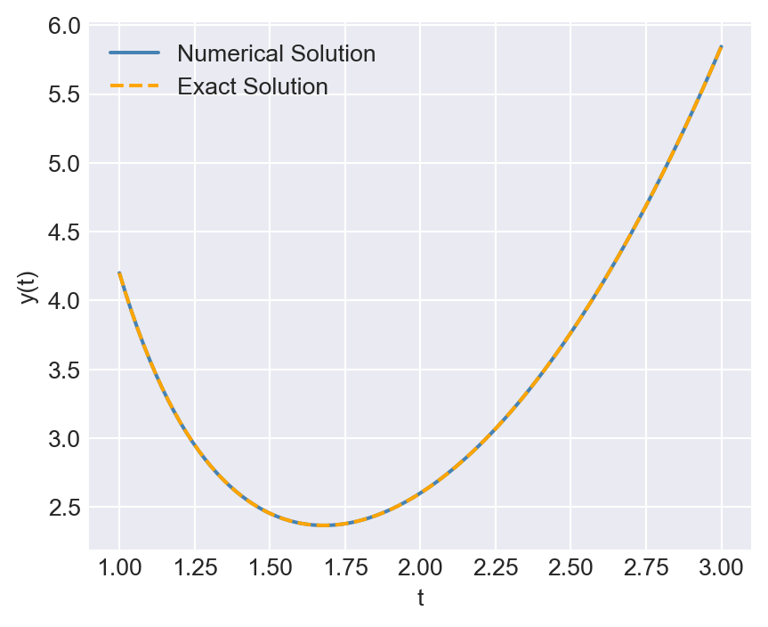
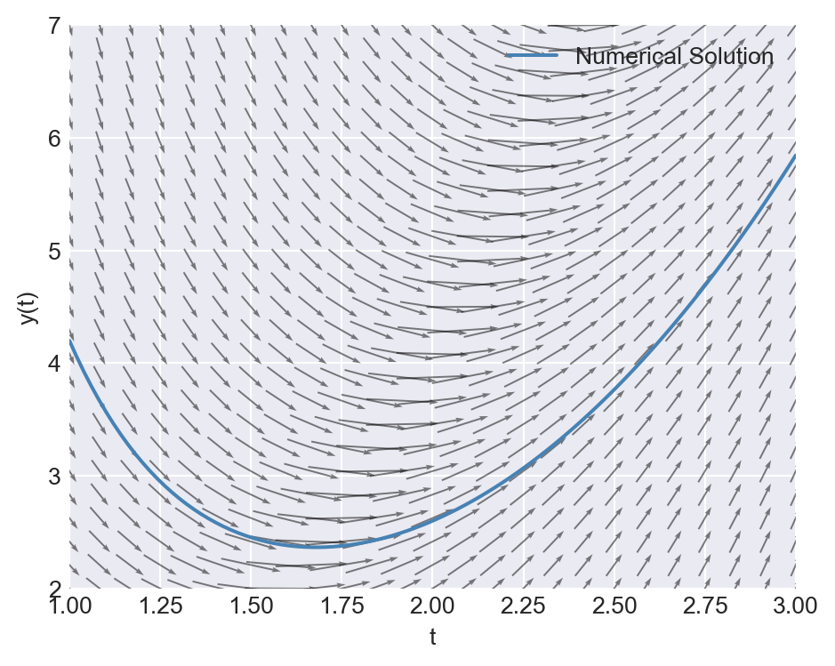

import numpy as np
import scipy.stats as stats
import scipy.optimize as optimize
import scipy.integrate as integrate
import pandas as pd
import matplotlib.pyplot as plt
from matplotlib import cm
plt.style.use('seaborn-v0_8-darkgrid')8 Applications in Numerical Analysis
8.1 Introduction
In this chapter, we cover frequently used numerical methods for solving mathematical problems in statistics and econometrics. We focus on optimization and root finding, numerical integration, and solving ordinary differential equations (ODEs).
8.2 Optimization and root finding
SciPy includes several optimization and root-finding functions in the scipy.optimize module. Some of these functions are listed below.
optimize_scalar: Minimizes a scalar function of one variable.optimize.minimize: Minimizes a scalar function of one or more variables.optimize.linprog: Minimizes a linear objection function subject to linear equality and inequality constraints.optimize.root_scalar: Finds a root of a scalar function of one variable.optimize.root: Finds a root of a vector function.
The syntax for the optimize_scalar function is as follows:
optimize_scalar(fun, bracket=None, bounds=None, args=(), method='brent', tol=None, options=None)Here, fun is the objective function to be minimized. The bracket argument is a tuple specifying the interval that contains a minimum of the function. The bounds argument is a tuple specifying the bounds on the variable for the bounded minimization method. The method argument specifies the type of solver. It can take one of the following values: 'brent', 'bounded', or 'golden'.
Consider the following function: \[ f(x)=-x^2e^{-x},\, 0\leq x\leq 10. \]
# Plot the function f(x) = -x^2 * exp(-x)
x = np.linspace(0, 10, 100)
y = -x**2 * np.exp(-x)
plt.figure(figsize=(5, 4))
plt.plot(x, y, linewidth=1.5, color='steelblue')
plt.axhline(0, color='black', lw=1, ls='-')
plt.axvline(0, color='black', lw=1, ls='-')
#plt.title("Plot of $f(x)=-x^2e^{-x}$")
plt.xlabel("$x$")
plt.ylabel("$f(x)$")
plt.show()
Figure 8.1 indicates that the function has a minimum at \(x=2\). We can use the minimize_scalar function to confirm that \(x=2\) is indeed the minimum. In the code below, we first define the function f(x), then use the minimize_scalar function with the bounded method to find the value of \(x\) that minimizes \(f(x)\) over the interval \([0, 10]\).
# Define the objective function
def f(x):
return -x**2 * np.exp(-x)
# Minimize the function using the 'bounded' method within the interval [0, 10]
result = optimize.minimize_scalar(f, bounds=(0, 10), method='bounded')
# Print the result
print("x that minimizes f(x):", result.x.round(4))
print("Minimum value of f(x):", result.fun.round(4))x that minimizes f(x): 2.0
Minimum value of f(x): -0.5413The syntax for the minimize function is as follows:
optimize.minimize(fun, x0, args=(), method=None, jac=None, hess=None, hessp=None, bounds=None, constraints=(), tol=None, callback=None, options=None)Some of the arguments that we need to supply to the minimize function are listed below.
fun: The objective function to be minimizedx0: A list (or array) of initial values of the unknown parametersargs: A tuple containing the extra arguments passed to the objective functionmethod: Type of the solver. It can take one of the following values:'Nelder-Mead','Powell','CG','BFGS','Newton-CG','L-BFGS-B','TNC','COBYLA','COBYQA','SLSQP','trust-constr','dogleg','trust-ncg','trust-krylov', or'trust-exact'.- If
methodis not given, it is chosen to be one ofBFGS,L-BFGS-B,SLSQP, depending on whether or not the problem has constraints or bounds.
As an example, we consider the Rosenbrock function, which is widely used for testing optimization algorithms. The Rosenbrock function is defined as: \[ f(x,y)=(a-x)^2+b(y-x^2)^2. \]
The function has a global minimum at \((x,y)=(a,a^2)\), where \(f(x,y)=0\). In the example below, we set \(a=1\) and \(b=8\), so that the global minimum is at \((1,1)\). Figure 8.2 shows the contour plot of the Rosenbrock function, while Figure 8.3 presents a 3D surface plot of the function.
# Define the Rosenbrock function
def rosen(x, y):
return (1 - x)**2 + 8 * (y - x**2)**2
# Create a grid of points
x = np.linspace(-2, 2, 400)
y = np.linspace(-1, 3, 400)
X, Y = np.meshgrid(x, y)
Z = rosen(X, Y)
# Plot the Rosenbrock function
plt.figure(figsize=(5, 4))
cp = plt.contourf(X, Y, Z, levels=20, cmap=cm.winter_r)
plt.colorbar(cp)
#plt.title("Rosenbrock Function")
plt.xlabel("x")
plt.ylabel("y")
plt.show();
# Initialize figure
fig = plt.figure(figsize=(6, 5))
ax = fig.add_subplot(111, projection='3d')
# Evaluate function
X = np.arange(-2, 2, 0.15)
Y = np.arange(-1, 3, 0.15)
X, Y = np.meshgrid(X, Y)
Z = rosen(X,Y)
# Plot the surface
surf = ax.plot_surface(X, Y, Z, cmap=cm.winter_r,
linewidth=0, antialiased=False)
ax.set_zlim(0, 200)
fig.colorbar(surf)
plt.show()
Next, we use the minimize function to find the values of \(x\) and \(y\) that minimize the Rosenbrock function. We start with an initial guess of \((x,y)=(0,0)\) and use the BFGS algorithm to find the minimum.
# Define the objective function (e.g., Rosenbrock function)
def rosen(theta):
return (1 - theta[0])**2 + 8 * (theta[1] - theta[0]**2)**2
# Initial guess
theta0 = [0, 0]
# Minimize the function
result = optimize.minimize(rosen, theta0, method='BFGS')
print("Solution found:")
print("theta =", np.round(result.x,3))
print("f(theta) =", np.round(result.fun,4))
print("Success:", result.success)
print("Number of iterations:", result.nit)Solution found:
theta = [1. 1.]
f(theta) = 0.0
Success: True
Number of iterations: 10The optimize.root_scalar function can be used to find a root of a scalar function of one variable. The syntax for the function is as follows:
optimize.root_scalar(f, args=(), method=None, bracket=None, fprime=None,
fprime2=None, x0=None, x1=None, xtol=None, rtol=None,
maxiter=100, options=None)Some of the arguments that we need to supply to the root_scalar function are listed below.
f: The function for which we want to find a root.args: A tuple containing the extra arguments passed to the function.method: Type of the solver. See Table 8.1 for the list of available methods and their required arguments.bracket: A tuple specifying the interval that contains a root of the function. This argument is required for the methods'bisect','brentq','brenth','ridder', and'toms748'.x0,x1: Initial guesses for the root. These arguments are required for the method'newton'.
In Table 8.1, we summarize arguments required for each methods in the root_scalar function.
| method | f | args | bracket | x0 | x1 | fprime | fprime2 |
|---|---|---|---|---|---|---|---|
| bisect | x | x | |||||
| brentq | x | x | |||||
| brenth | x | x | |||||
| ridder | x | x | |||||
| toms748 | x | x | |||||
| secant | x | x | |||||
| newton | x | x | |||||
| halley | x | x | x | x |
Consider the following function: \(f(x)=1.5xe^{-x}-0.2\). Its plot over the interval \((0, 8)\) is shown in Figure 8.4.
# Plot the function f(x) = 1.5x * exp(-x) - 0.2
x = np.linspace(0, 8, 100)
y = 1.5*x * np.exp(-x) -0.2
plt.figure(figsize=(5, 4))
plt.plot(x, y, linewidth=1.5, color='steelblue')
plt.axhline(0, color='black', lw=0.8, ls='-')
plt.axvline(0, color='black', lw=0.8, ls='-')
#plt.title("Plot of $f(x)=xe^{-x}-0.5$")
plt.xlabel("$x$")
plt.ylabel("$f(x)$")
plt.ylim(-0.4, 0.4)
plt.show()
From the plot, we can see that the function has two roots in the interval \((0, 8)\). In the code below, we use the brentq method to find the roots in the intervals \((0, 2)\) and \((4, 8)\). According to Table 8.1, we need to supply the bracket argument for the brentq method.
# Define the function
def f(x):
return 1.5*x*np.exp(-x) - 0.2
# Find the first root in the interval (0, 2)
root1 = optimize.root_scalar(f, method='brentq', bracket=(0, 1))
# Find the second root in the interval (4, 8)
root2 = optimize.root_scalar(f, method='brentq', bracket=(2, 8))
print("First root:", np.round(root1.root, 4))
print("Second root:", np.round(root2.root, 4))First root: 0.1558
Second root: 3.168When using the newton method, we need to provide an initial guess for the root using the x0 argument. In the code below, we use the newton method to find the roots of the function, using the initial values of \(x=0.5\) and \(x=5\), respectively.
# Find the first root using the 'newton' method with an initial guess of 0.5
root1_newton = optimize.root_scalar(f, method='newton', x0=0.5, fprime=lambda x: 1.5*(1-x)*np.exp(-x))
# Find the second root using the 'newton' method with an initial guess of 5
root2_newton = optimize.root_scalar(f, method='newton', x0=5, fprime=lambda x: 1.5*(1-x)*np.exp(-x))
print("First root (Newton):", np.round(root1_newton.root, 4))
print("Second root (Newton):", np.round(root2_newton.root, 4))First root (Newton): 0.1558
Second root (Newton): 3.1688.3 Numerical integration
SciPy provides several functions for numerical integration in the scipy.integrate module. Some of these functions are listed below.
integrate.quad: Computes a definite integral of a scalar function of one variable.integrate.dblquad: Computes a double integral of a scalar function of two variables.integrate.tplquad: Computes a triple integral of a scalar function of three variables.integrate.nquad: Computes a multiple integral of a scalar function of multiple variables.integrate.simpson: Integrate y(x) using samples along the given axis and the composite Simpson’s rule.integrate.trapezoid: Integrate along the given axis using the composite trapezoidal rule.
The syntax for the quad function is as follows:
integrate.quad(func, a, b, args=(), full_output=0, epsabs=1.49e-08, epsrel=1.49e-08, limit=50, points=None)Here, func is the integrand function, a and b are the limits of integration, and args is a tuple containing extra arguments passed to the integrand function.
Consider the following function: \(f(x)=1.5xe^{-x^{2}}+0.1\). We want to compute the definite integral of \(f(x)\) over the interval \([0, 5]\). The plot of the function is shown in Figure 8.5.
# Plot the function f(x) = 1.5*x * exp(-x**2) + 0.1
x = np.linspace(0, 5, 100)
y = 1.5*x * np.exp(-x**2) + 0.1
plt.figure(figsize=(5, 4))
plt.plot(x, y, linewidth=1.5, color='steelblue')
plt.axhline(0, color='black', lw=1, ls='-')
plt.axvline(0, color='black', lw=1, ls='-')
#plt.title("Plot of $f(x)=xe^{-x^{0.4}}+0.5$")
plt.xlabel("$x$")
plt.ylabel("$f(x)$")
plt.ylim(-0.1, 1)
plt.show()
We can use the quad function to compute the definite integral of \(f(x)\) over the interval \([0, 5]\) as follows:
# Define the integrand function
def f(x):
return 1.5*x * np.exp(-x**2) + 0.1
# Compute the definite integral of f(x) from 0 to 5
integral, error = integrate.quad(f, 0, 5)
print("Definite integral of f(x) from 0 to 5:", np.round(integral, 4))
print("Estimated error:", np.round(error, 4))Definite integral of f(x) from 0 to 5: 1.25
Estimated error: 0.0The syntax for the dblquad function is as follows:
integrate.dblquad(func, a, b, gfun, hfun, args=(), epsabs=1.49e-08, epsrel=1.49e-08)Here, func is the integrand function, a and b are the limits of integration for the outer integral, gfun and hfun are functions that define the limits of integration for the inner integral, and args is a tuple containing extra arguments passed to the integrand function.
Suppose that the random variables \(Y_1\) and \(Y_2\) have the joint probability density function \(f (y_1, y_2)\) given by \[ \begin{align*} f(y_1,y_2)= \begin{cases} 30y_1y^2_2,\quad y_1-1\leq y_2\leq 1-y_1, 0\leq y_1\leq1,\\ 0,\quad\text{elsewhere}. \end{cases} \end{align*} \]
Let \(F_{Y_1,Y_2}(y_1,y_2)\) be the joint cumulative distribution function (CDF) of \(Y_1\) and \(Y_2\). We want to compute (i) \(F_{Y_1,Y_2}(0.5,0.5)\) and (ii) the probability \(P(Y_1>Y_2)\). We can express \(F_{Y_1,Y_2}(0.5,0.5)\) as a double integral: \[ F_{Y_1,Y_2}(0.5,0.5)=\int_0^{0.5}\int_{y_1-1}^{0.5}30y_1y^2_2\,dy_2\,dy_1. \]
Using the dblquad function, we can compute \(F_{Y_1,Y_2}(0.5,0.5)\) as follows:
# Define the joint PDF
def joint_pdf(y2, y1):
return 30 * y1 * y2**2
# Compute the joint CDF F_Y1,Y2(0.5, 0.5)
cdf, error = integrate.dblquad(joint_pdf, 0, 0.5, lambda y1: y1 - 1, lambda y1: 0.5)
print("F_Y1,Y2(0.5, 0.5):", np.round(cdf, 4))
print("Estimated error:", np.round(error, 4))F_Y1,Y2(0.5, 0.5): 0.5625
Estimated error: 0.0Note that we use the lambda function to define the limits of integration for the inner integral. Alternatively, we can define separate functions for the limits of integration as follows:
# Lower bound for y2 depends on y1
def y2_lower(y1):
return y1 - 1
# Upper bound for y2 is constant = 1/2
def y2_upper(y1):
return 0.5
# Compute the joint CDF F_Y1,Y2(0.5, 0.5) using the defined limit functions
cdf, error = integrate.dblquad(joint_pdf, 0, 0.5, y2_lower, y2_upper)
print("F_Y1,Y2(0.5, 0.5):", np.round(cdf, 4))
print("Estimated error:", np.round(error, 4))F_Y1,Y2(0.5, 0.5): 0.5625
Estimated error: 0.0To compute the probability \(P(Y_1>Y_2)\), we can express it as a double integral: \[ P(Y_1>Y_2)=1-P(Y_1\leq Y_2)=1-\int_0^{0.5}\int_{y_1}^{1-y_1}30y_1y^2_2\,dy_2\,dy_1. \]
# Compute the probability P(Y1 > Y2)
prob, error = integrate.dblquad(joint_pdf, 0, 0.5, lambda y1: y1, lambda y1: 1 - y1)
P_Y1_greater_Y2 = 1 - prob
print("P(Y1 > Y2):", np.round(P_Y1_greater_Y2, 4))
print("Estimated error:", np.round(error, 4))P(Y1 > Y2): 0.6562
Estimated error: 0.08.4 Ordinary differential equations
Let \(y(t)\) be a function of \(t\). An ordinary differential equation (ODE) is an equation that relates the function \(y(t)\) to its derivatives. The general form of a first-order ODE is given by \[ \frac{dy(t)}{dt}=f(t,y(t)), \] where \(f(t,y(t))\) is a given function. The second-order ODE can be expressed as \[ \frac{d^2y(t)}{dt^2}=g\left(t,y(t),\frac{dy(t)}{dt}\right). \]
The higher-order ODE can be converted into a system of first-order ODEs. For example, the second-order ODE can be rewritten as a system of first-order ODEs by introducing a new variable \(v(t)=\frac{dy(t)}{dt}\). This gives us the following system: \[ \begin{align*} \frac{dy(t)}{dt} &= v(t), \\ \frac{dv(t)}{dt} &= g(t,y(t),v(t)). \end{align*} \]
SciPy provides several functions for solving ordinary differential equations (ODEs) in the scipy.integrate module. The main function for solving ODEs is:
integrate.solve_ivp: Solve an initial value problem for a system of ODEs.
The syntax for the solve_ivp function is as follows:
integrate.solve_ivp(fun, t_span, y0, method='RK45', t_eval=None, dense_output=False, events=None, vectorized=False, args=None, rtol=1e-06, atol=1e-09, jac=None, jac_sparsity=None, max_step=np.inf, first_step=None)Some of the arguments that we need to supply to the solve_ivp function are listed below.
fun: The right-hand side of the ODE system. It should be a function that takes two arguments: the independent variable (usually time) and the dependent variable (usually a vector).t_span: A tuple specifying the interval of integration (t0, tf).y0: A list (or array) of initial values of the dependent variable.method: Type of the solver. It can take one of the following values:'RK45','RK23','DOP853','Radau','BDF', or'LSODA'. The default method is'RK45'.t_eval: An array of time points at which to store the computed solution. IfNone(default), the solver will choose its own time points.
Consider the following first-order ODE: \[ \frac{dy(t)}{dt}=-yt^2+1.5y,\quad y(0)=2,\quad 0\leq t\leq 3. \]
The directional field of the ODE shows the slope of the solution curve at each point in the \(t\)-\(y\) plane. That is, it shows the slope \(\frac{dy(t)}{dt}=-yt^2+1.5y\) at each point \((t,y)\). The direction field can be generated using the quiver function from Matplotlib. In the code below, we create a mesh grid of points in the \(t\)-\(y\) plane and compute the direction vectors at each point. We then use the quiver function to plot the direction field, as shown in Figure 8.6. The solution curve (integral curve) of the ODE will follow the direction of the arrows. At each point, the slope of the solution curve is given by the direction of the arrow.
# Generating a direction (slope) field for dy/dt = -y*t**2 + 1.5*y
# Grid for t and y
tmin, tmax = 0, 3
ymin, ymax = 0, 7
nt, ny = 25, 25
t = np.linspace(tmin, tmax, nt)
y = np.linspace(ymin, ymax, ny)
T, Y = np.meshgrid(t, y)
# Slope field: dy/dt = f(t,y) = -y*t^2 + 1.5*y
S = -Y * T**2 + 1.5 * Y
# Normalize arrows so they display nicely
N = np.sqrt(1 + S**2)
U = 1.0 / N # x-component (dt direction)
V = S / N # y-component (dy direction)
fig, ax = plt.subplots(figsize=(5, 4))
ax.quiver(T, Y, U, V, angles='xy', scale_units='xy', scale=5, pivot='mid')
ax.set_xlabel('t')
ax.set_ylabel('y(t)')
ax.set_xlim(tmin, tmax)
ax.set_ylim(ymin, ymax)
ax.axhline(0, linewidth=1.2)
ax.axvline(0, linewidth=1.2)
plt.tight_layout()
plt.show()
Our ODE is a first-order linear ODE. The general form of a first-order linear ODE is given by \[ \frac{dy(t)}{dt}+a(t)y(t)=b(t), \] where \(a(t)\) and \(b(t)\) are given functions. To prove the solution, we use the integrating factor method.
Multiply both sides by \(e^{\int a(t)dt}\) (the integrating factor): \[ e^{\int a(t)dt}\frac{dy(t)}{dt}+a(t)y(t)e^{\int a(t)dt}=b(t)e^{\int a(t)dt}. \]
The left side can be rewritten as the derivative of a product: \[ \frac{d}{dt}\left(y(t)e^{\int a(t)dt}\right)=b(t)e^{\int a(t)dt}. \]
Integrate both sides: \[ y(t)e^{\int a(t)dt}=\int b(t)e^{\int a(t)dt}dt+C. \]
Solve for y(t): \[ y(t)=e^{-\int a(t)dt}\left(\int b(t)e^{\int a(t)dt}dt+C\right), \tag{8.1}\] where \(C\) is a constant determined by the initial condition.
In our case, \(a(t)=t^2-1.5\) and \(b(t)=0\). Therefore, its exact solution is given by \(y(t)=2e^{-(2t^3-9t)/6}\). We will compare this exact solution with the numerical solution obtained using the solve_ivp function.
In the following code, we use the solve_ivp function to solve the ODE numerically. We define the ODE function, set the initial condition and time span, and then call the solve_ivp function with the RK45 method. We also specify the time points at which we want to store the computed solution using the t_eval argument.
# Define the ODE function
def ode_func(t, y):
return -y*t**2+1.5*y
# Initial condition
y0 = [2.0]
# Time span for the solution
t_span = (0, 3)
# Time points at which to store the computed solution
t_eval = np.linspace(0, 3, 400)
# Solve the ODE using solve_ivp
solution = integrate.solve_ivp(ode_func, t_span, y0, method='RK45', t_eval=t_eval)
solution message: The solver successfully reached the end of the integration interval.
success: True
status: 0
t: [ 0.000e+00 7.519e-03 ... 2.992e+00 3.000e+00]
y: [[ 2.000e+00 2.023e+00 ... 2.354e-02 2.225e-02]]
sol: None
t_events: None
y_events: None
nfev: 98
njev: 0
nlu: 0The output indicates that the solver successfully found a solution to the ODE. The t attribute of the solution object contains the time points at which the solution was computed, while the y attribute contains the corresponding values of the dependent variable.
In the code below, we compare the numerical solution obtained using solve_ivp with the exact solution by plotting both solutions on the same graph. Figure 8.7 indicates that the numerical solution closely matches the exact solution.
# Exact solution for comparison
def exact_solution(t):
return 2*np.exp(-(2*t**3-9*t)/6)
y_exact = exact_solution(t_eval)
# Plot the numerical and exact solutions
plt.figure(figsize=(5, 4))
plt.plot(solution.t, solution.y[0], label='Numerical Solution', color='steelblue')
plt.plot(t_eval, y_exact, label='Exact Solution', linestyle='--', color='orange')
plt.xlabel('t')
plt.ylabel('y(t)')
# plt.title('Numerical vs Exact Solution of the ODE')
plt.legend()
plt.show()
In the following figure, we plot the numerical solution obtained using solve_ivp with the direction field of the ODE. The plot shows that the slope of the numerical solution follows the direction of arrows.
# Plot the numerical solution with the direction field
fig, ax = plt.subplots(figsize=(5, 4))
ax.quiver(T, Y, U, V, angles='xy', scale_units='xy', scale=5, pivot='mid', alpha=0.5)
ax.plot(solution.t, solution.y[0], label='Numerical Solution', color='steelblue', linewidth=1.5)
ax.set_xlabel('t')
ax.set_ylabel('y(t)')
ax.set_xlim(tmin, tmax)
ax.set_ylim(ymin, ymax)
ax.axhline(0, linewidth=1.2)
ax.axvline(0, linewidth=1.2)
plt.legend()
plt.tight_layout()
plt.show()
As another example, consider the following first-order ODE: \[ \frac{dy(t)}{dt}=\frac{t^3-2y(t)}{t},\quad y(1)=4.2,\quad 1\leq t\leq 3. \]
The following code provides the numerical solution of the ODE using the solve_ivp function with the RK45 method.
# Define the ODE function
def ode_func(t, y):
return (t**3 - 2*y) / t
# Initial condition
y0 = [4.2]
# Time span for the solution
t_span = (1, 3)
# Time points at which to store the computed solution
t_eval = np.linspace(1, 3, 100)
# Solve the ODE using solve_ivp
solution = integrate.solve_ivp(ode_func, t_span, y0, method='RK45', t_eval=t_eval)
solution message: The solver successfully reached the end of the integration interval.
success: True
status: 0
t: [ 1.000e+00 1.020e+00 ... 2.980e+00 3.000e+00]
y: [[ 4.200e+00 4.056e+00 ... 5.742e+00 5.845e+00]]
sol: None
t_events: None
y_events: None
nfev: 32
njev: 0
nlu: 0Using Equation 8.1, we can show that the exact solution of the ODE is given by \(y(t)=\frac{t^3}{5}+\frac{4}{t^2}\). In Figure 8.9, we compare the numerical solution with the exact solution by plotting both solutions on the same graph.
# Exact solution for comparison
def exact_solution(t):
return t**3 / 5 + 4 / t**2
y_exact = exact_solution(t_eval)
# Plot the numerical and exact solutions
plt.figure(figsize=(5, 4))
plt.plot(solution.t, solution.y[0], label='Numerical Solution', color='steelblue')
plt.plot(t_eval, y_exact, label='Exact Solution', linestyle='--', color='orange')
plt.xlabel('t')
plt.ylabel('y(t)')
# plt.title('Numerical vs Exact Solution of the ODE')
plt.legend()
plt.show()
Finally, we plot the numerical solution together with the direction field of the ODE. The plot shows that the arrows are tangent to the numerical solution, indicating that the solver has accurately captured the behavior of the system.
# Grid for t and y
tmin, tmax = 1, 3
ymin, ymax = 2, 7
nt, ny = 25, 25
t = np.linspace(tmin, tmax, nt)
y = np.linspace(ymin, ymax, ny)
T, Y = np.meshgrid(t, y)
# Slope field: dy/dt = f(t,y) = (t**3 - 2*y) / t
S = (T**3 - 2*Y) / T
# Normalize arrows so they display nicely
N = np.sqrt(1 + S**2)
U = 1.0 / N # x-component (dt direction)
V = S / N # y-component (dy direction)
# Plot the numerical solution with the direction field
fig, ax = plt.subplots(figsize=(5, 4))
ax.quiver(T, Y, U, V, angles='xy', scale_units='xy', scale=5, pivot='mid', alpha=0.5)
ax.plot(solution.t, solution.y[0], label='Numerical Solution', color='steelblue', linewidth=1.5)
ax.set_xlabel('t')
ax.set_ylabel('y(t)')
ax.set_xlim(tmin, tmax)
ax.set_ylim(ymin, ymax)
ax.axhline(0, linewidth=1.2)
ax.axvline(0, linewidth=1.2)
plt.legend()
plt.tight_layout()
plt.show()
8.5 Further reading
For more information on numerical methods in Python, you can refer to the following resources:
- Chapters 3, 4 and 5 in Sydsæter et al. (2008),
- Documentation on
scipy.integrate, and - Chapters 6, 8 and 9 in Johansson (2024).